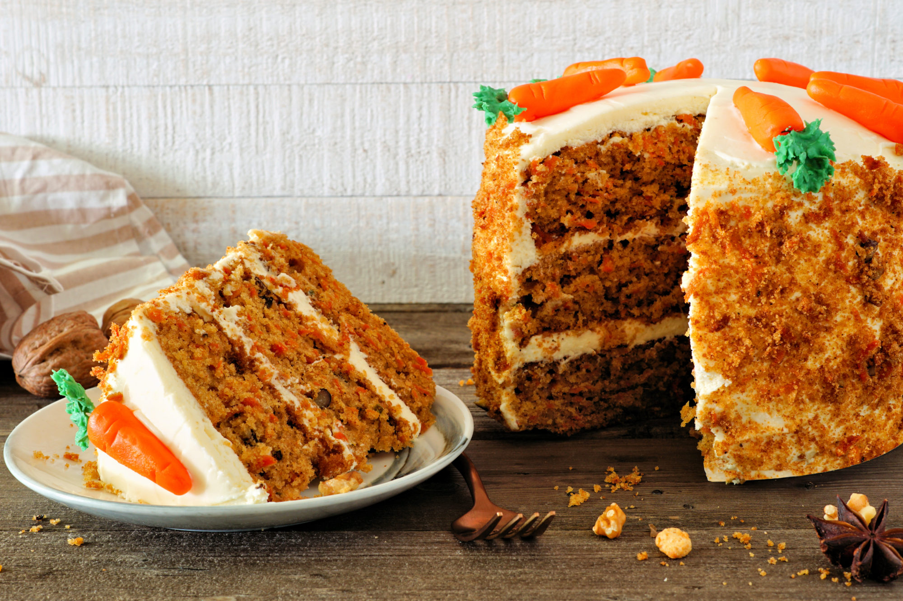

Carrot Cake

This carrot cake is my favorite recipe
Our top-rated carrot cake recipe is moist, light, fluffy, and topped with a rich cream cheese frosting. What's not to
love?
Ingredients
Cake
- 2 cups white sugar
- 1 ¼ cups vegetable oil
- 4 eggs
- 2 teaspoons vanilla extract
- 2 cups all-purpose flour
- 2 teaspoons baking soda
- 2 teaspoons baking powder
- 2 teaspoons ground cinnamon
- ½ teaspoon salt
- 3 cups grated carrots
- 1 cup chopped pecans
Frosting
- ½ cup butter, softened
- 8 ounces cream cheese, softened
- 4 cups confectioners' sugar
- 1 teaspoon vanilla extract
- 1 cup chopped pecans
Steps
- Preheat the oven to 175°C. Grease and flour a 9x13 inch pan.
- Beat sugar, oil, eggs, and 2 teaspoons vanilla together in a large bowl with an electric mixer until well combined. Mix
in flour, baking soda, baking powder, cinnamon, and salt. Stir in carrots. Fold in pecans. Pour into the prepared pan.
- Bake in the preheated oven until a toothpick inserted into the center of the cake comes out clean, about 40 minutes. Let
cool in the pan for 10 minutes, then turn out onto a wire rack and cool completely.
- To make the frosting: Beat butter, cream cheese, confectioners' sugar, and 1 teaspoon vanilla together in a large bowl
with an electric mixer until smooth and creamy. Stir in chopped pecans. Frost the cooled cake.